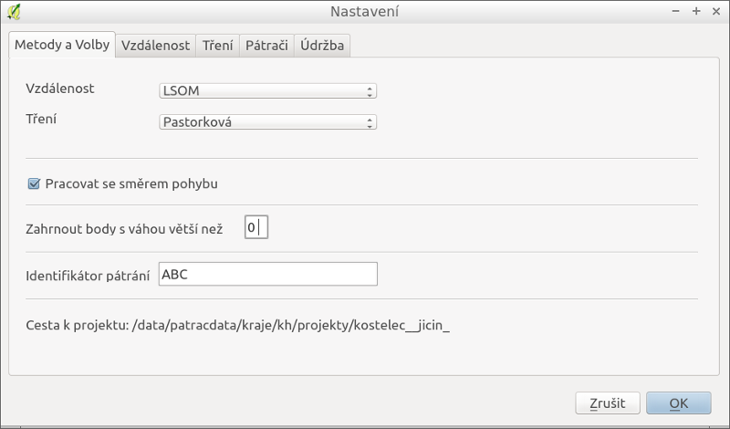
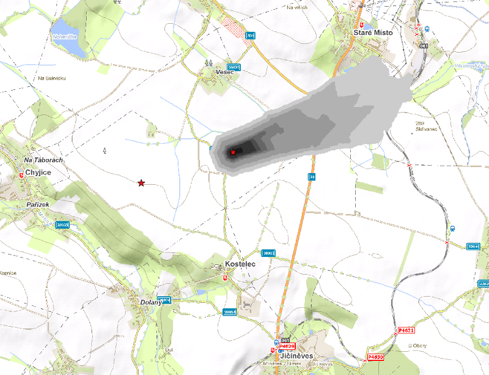
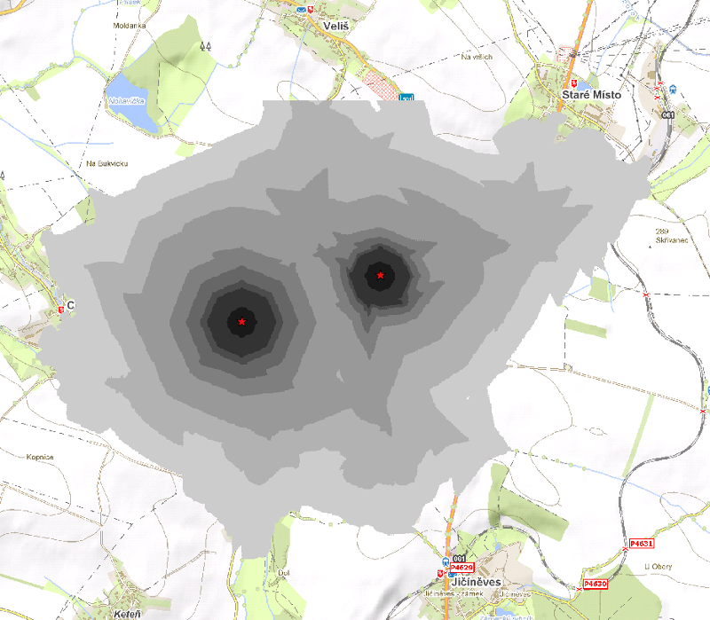
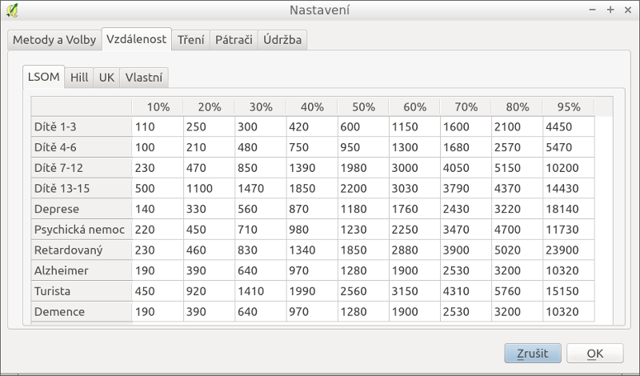
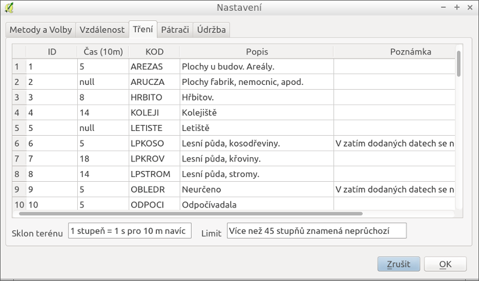
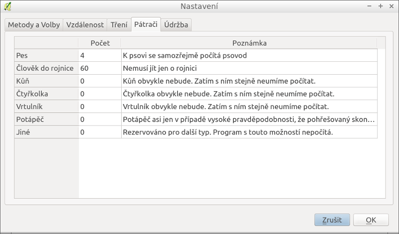

Aplikace má celou řadu nastavení. Nastavení se zobrazí pomocí ikony

V rozbalovacím seznamu Vzdálenost je možno vybrat studii pro určování vzdálenosti výskytu. K dispozici jsou tři studie
V rozbalovacím seznamu Tření je možno vybrat třecí povrch. Aktuálně je však pouze jeden k dispozici a není možno zadat vlastní.
Zaškrtávací políčko Pracovat se směrem pohybu určuje zda v případě dvou a více bodů počítat se směrem pohybu osoby. Pokud je tlačítko zaškrtnuto počítá se z bodů směr pohybu a ovlivňuje se tím výsledná pravděpodobnostní mapa. Následující obrázky ukazují rozdíl. První používá směr pohybu a druhý jej nepoužívá.


Položka Zahrnout body s váhou větší než ? umožňuje filtrovat body pro výpočet. Implicitně (hodnota 0) jsou všechny body s váhou = 0 odstraněny z výpočtu. Např. body, ke kterým nemáme důvěru, protože svědci si odporují.
Identifikátor pátrání slouží k doplňkovm funkcím pro sledování pátračů v reálném čase. Tento identifikátor musí mít ve svých aplikacích pro mobilní teleofny všichni pátrači stejný.
Cesta k projektu ukazuje kam se ukládají všechna data. Tedy např. i GPX soubory pro GPS přijímače.
Karta Vzdálenost obsahuje tabulky výše popsaných studií. Řádky představují typ osoby. Sloupce pak vzdálenosti (v metrech) do kterých bylo určité procento pohřešovaných nalezeno.

Tabulku na kartě Vlastní je možno editovat a nastavit tak vzdálenosti dle jiné studie, nebo vlastních zkušeností.
V přípravě je studie pro ČR. Jakmile bude zpracována, bude do aplikace doplněna.
Karta Tření obsahuje popis parametrů aktuálně používaného algoritmu pro třecí povrch. Třecí povrch vychází z digitálního modelu térénu a typů povrchu. Pro každý typ povrchu je určena obtížnost pohybu resp. náklady na překonání určité vzdálenosti (aktuálně se jedná o čas na překonání 10 m). Např. pro silnice je tření (náklady) nižší než pro pole, a tedy pohyb rychlejší. Podobně pohyb do kopce je pomalejší než po rovině. Pokud je u nákladu uvedena hodnota null, znamené to, že není možno daným prostorem se pohybovat a jedná se o neprostupnou překážku (např. vodní plocha, oplocenka, vojenská základna).

Karta Pátračí obsahuje seznam jednotek, které jsou k dispozici. Seznam je možné editovat a ovlivňovat tak výsledky algoritmu pro export sektorů s reportem..
